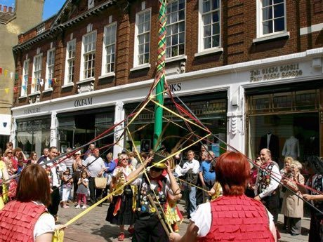

Home / Living Traditions / Celtic and Atlantic Europe
Playable heritage gameRibbon-Pole Plaiting Dance
Also known as Maypole ribbon dance (generic)
Dancers stand round a tall pole, each holding the end of a long ribbon fixed at the top. Half of them pass over their neighbours and half pass under, circling in opposite directions, until the ribbons are plaited into a woven sleeve down the pole, and then they unwind it again.

How to play
- Four signs fall toward the line: the pink foot is a pass over, the blue foot is a pass under, the gold mark is a skip and the green mark is a clap.
- Act each sign as it reaches the line, on the beat. Over and under alternate to make the plait; skips carry you between them.
- Choose a tune: a 6/8 jig for plaiting, a steady 2/4 for the barber's pole, or a quick 2/4 for the spider's web.
Rules at a glance
- Dancers pass over and under in turn, so the ribbons cross and plait; the over and under steps are the two feet signs.
- Each tune is played twice, in six beats to the bar for the jig and two beats to the bar for the other two.
- A step on the beat scores in full, a near step scores less, and an extra step costs a little.
- Figures end on a clap, then the dancers unwind.
About the tradition
Poles raised for spring and midsummer fairs stand on village greens in Britain, Germany and Sweden; ribbon plaiting around the pole is best known from British village and school dances. The woven figures have names such as the barber's pole and the spider's web, and are taught from one generation of dancers to the next.
Origins
A living tradition passed from person to person; it is not tied to a single dated origin. It belongs to the cultural world of Celtic and Atlantic Europe.
Credits
- Step patterns: World Heritage Games (original teaching patterns)
- Photo: JuliaC2006, CC BY 2.0, source on Wikimedia Commons
- Text: CC BY-SA 4.0, World Heritage Games.
Sources

Get the app
Ribbon-Pole Plaiting Dance is coming to the App Store and Google Play. One app, many traditions, no account needed.
Included in Music & Dance: Cueca & Dizi
More games to play


More from United Kingdom

Antigua Classic Yacht Race
Antigua and Barbuda +1 · Racing
Bagatelle
France +1 · Dexterity and skill games
Bat and Trap
United Kingdom · Dexterity and skill games
Blacksmith's Forge
United Kingdom +4 · Crafts and making
Bridge Stick Race
United Kingdom · Toys